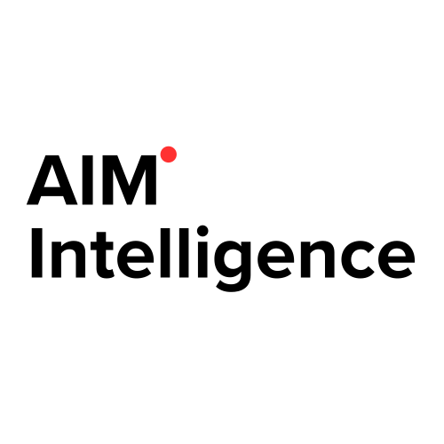
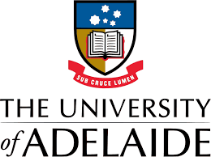

Research Experience
Aug. 2025 – Present


Georgia Institute of Technology (with NVIDIA)
Research Intern, Atlanta, GA
Coordinating a cross-institution agentic-LLM benchmark effort with NVIDIA across 10+ benchmarks and 8+ model families.
Mar. 2025 – Aug. 2025

MLAI@KAIST AI Graduate School
Research Intern, Seoul, South Korea
Developing retrieval-augmented generation (RAG) for AI-driven drug discovery, integrating multi-document summarization, molecular pathway analysis, multi-LLM collaboration ("Chain of Agents"), and long-context summarization to accelerate research.
Oct. 2024 – Feb. 2025
.jpeg)

Aim Intelligence
AI Red Team Researcher, LLM Jailbreak Red Team, Seoul, South Korea
- Investigated advanced LLM jailbreak techniques (achieved up to 95.9% success rate)
- Co-first author of "One-Shot is Enough..." (ACL 2025 main), introducing M2S (Multi-turn-to-Single-turn) adversarial methods
- Co-authored "Breaking the Guardrails with Personality..." (ACL 2025 under review), exploring personality-driven jailbreak
May 2024 – Feb. 2025

CREST, The University of Adelaide
Research Intern, Adelaide, Australia
- Led a 36-participant study on LLM-based software engineering tasks with multi-class dependencies and iterative refinement
- Analyzed GPT logs, test outcomes, and screen recordings to create data-driven guidelines, boosting developer productivity by ~20%
- Received a strong recommendation letter acknowledging first-author level contributions to the research